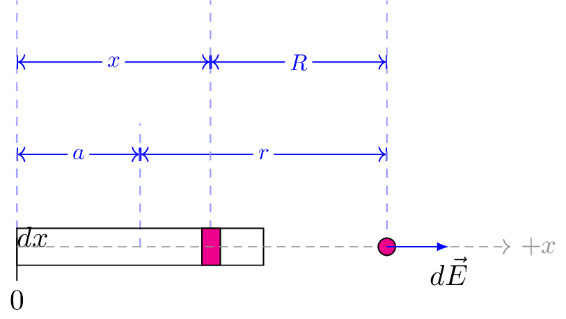

pre.tex
\documentclass[tikz]{standalone}\input{pre.tex}\begin{document}\begin{tikzpicture}[scale=1.5]
\lineann[1]{0}{1}{$a$}
\lineann[2]{0}{1.57}{$x$}
\begin{scope}[xshift=1.5cm]
\lineannn[-1]{0}{0.15}{$dx$}
\end{scope}
\begin{scope}[xshift=1cm]
\lineann[1]{0}{2}{$r$}
\end{scope}
\begin{scope}[xshift=1.57cm]
\lineann[2]{0}{1.43}{$R$}
\end{scope}
\draw (0,-0.15) rectangle ++(2,0.3);
\draw[fill=magenta] (1.5,-0.15) rectangle ++(0.15,0.3);
% \draw (1.15,-0.1) node[below] {$dq$};
% \draw (-4,0) circle (0cm);
\vbLabel{0}{-0.1}{0};
\draw[axis,->] (0,0) -- ++(4,0) node[right] {$+x$};
\draw[fill=magenta] (3,0) coordinate (Y) circle (2pt);
\draw[force,->] (Y) -- ++ (0.5,0) node[below] {$d\vec{E}$};
\end{tikzpicture}\end{document}